어떤 스킬인가요
이 쇼츠는 무료 Claude Code 스킬 하나로 로고 디자이너 일을 통째로 맡기는 장면을 보여 줘요. 첫 장면에서 claude.ai/code에 요청 한 줄을 넣자, 아래에 'Logo concepts'라는 시안 세 장이 바로 붙어 나와요.
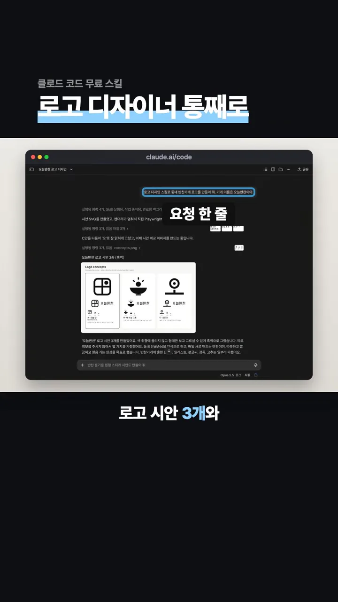
스킬은 GitHub 저장소 kaankiziltug/logo-design-skill에 있어요. 화면 오른쪽 아래에 '무료 · MIT' 라벨이 붙어 있어요. MIT 라이선스라 누구나 무료로 쓰고 고칠 수 있어요. 영상은 별을 6,300개 넘게 받았다고 말해요(화면의 별 표시는 6.4k). 개발자들이 도구를 올려 두는 사이트, 즉 GitHub에서요.
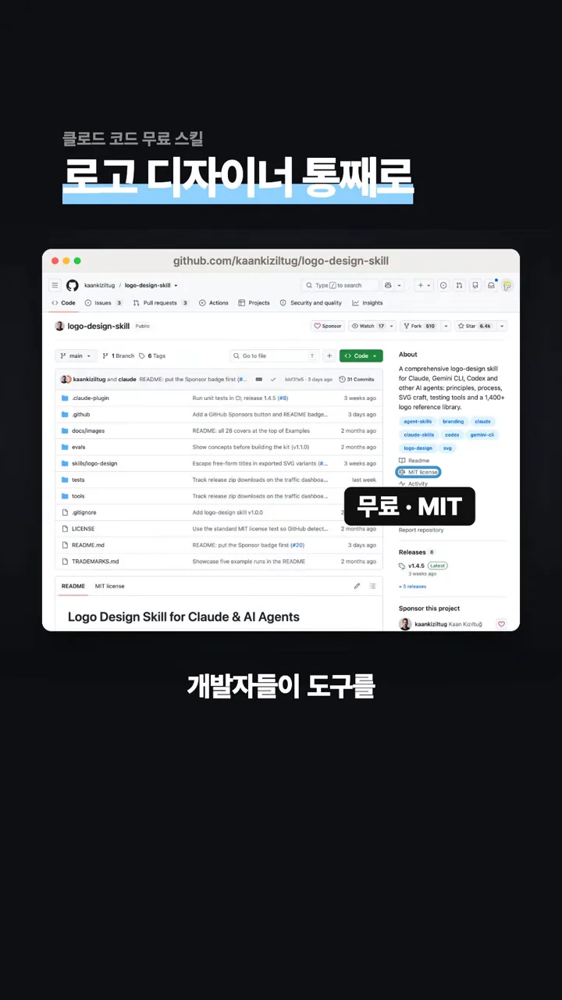
README에는 '28 brands, one design process'라는 예시 브랜드 모음이 있고, 그 아래 설명에 실제 로고 1,400개 넘게 담긴 참고 자료가 나와요. 영상은 이 자료가 스킬과 함께 깔린다고 해요.
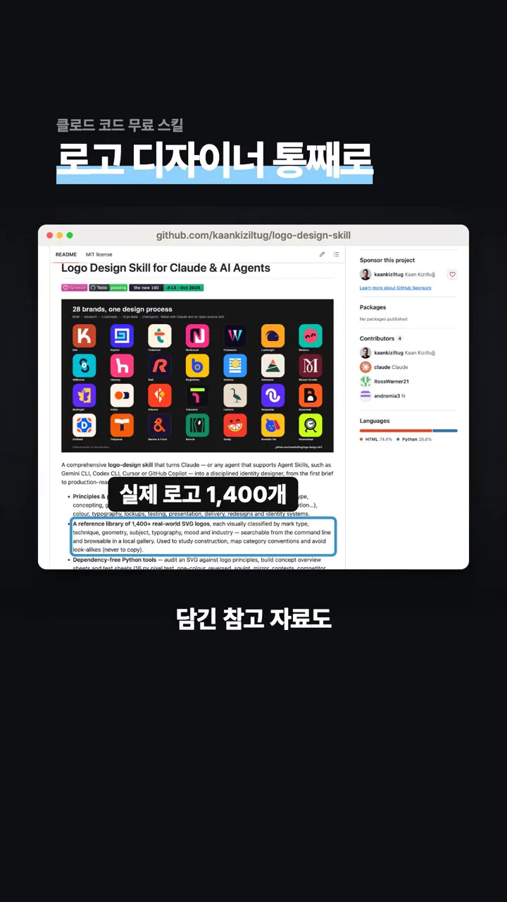
오늘반찬으로 해 보기: 시안 세 개와 멈춤
발표자는 가상의 반찬가게 '오늘반찬'을 맡겼어요. 이름만 말했는데 스킬이 진행한 순서는 아래와 같아요. 시안을 그리고, 작게 줄여 시험하고, 멈춰서 사람에게 고르게 한 뒤에야 브랜드 키트로 넘어가요.
flowchart LR
A["가게 이름 한 줄"] --> B["시안 세 개"]
B --> C["64·32·16px로 줄여 시험"]
C --> D{"멈춤: 사람이 고르기"}
D --> E["손님과 분위기 답하기"]
E --> F["브랜드 키트"]
시안 세 개
시안은 세 장이에요. A '오늘 칸'은 반찬통의 칸이 곧 달력 칸이고 해가 든 칸이 '오늘'이라는 뜻이에요. 카드 아래에 RECOMMENDED가 붙은 추천안이에요. B '해 뜨는 그릇'은 그릇 위로 아침 해가 뜨고, C는 글자 '오'를 해 모양으로 그렸어요. 발표자는 첫 번째 A를 골랐어요.
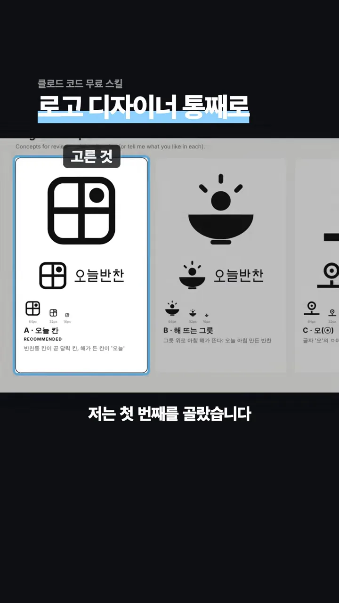
작게 줄여 보는 시험
시안마다 64px, 32px, 16px로 줄인 모습이 함께 붙어 있어요. 작게 줄여도 알아볼 수 있는지 미리 확인한 거예요.
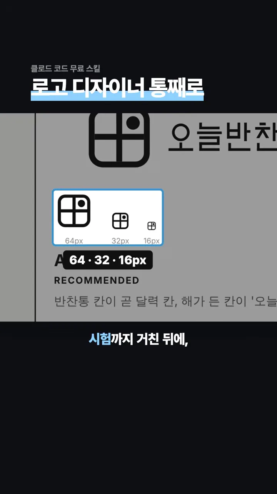
여기서 멈추고 고르게 해요
시안 화면 제목 아래에는 'Concepts for review — pick a direction'이라고 적혀 있어요. 검토용 시안이니 방향을 골라 달라는 뜻이에요. 영상의 말대로 스킬은 여기서 멈추고 사람이 고르기를 기다려요.
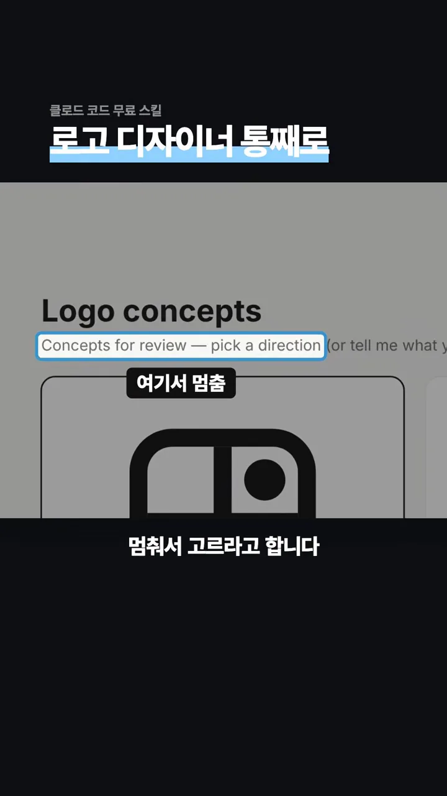
브랜드 키트와 설치
시안을 고른 뒤 발표자는 손님과 분위기를 말했어요. 화면의 '브리프' 칸에 그 문장이 들어가요. 퇴근길에 들르는 동네 단골을 위한 반찬가게이고, 아침마다 반찬 열 가지를 새로 만들어 따뜻하고 믿음 가는 인상이면 좋겠다는 내용이에요.
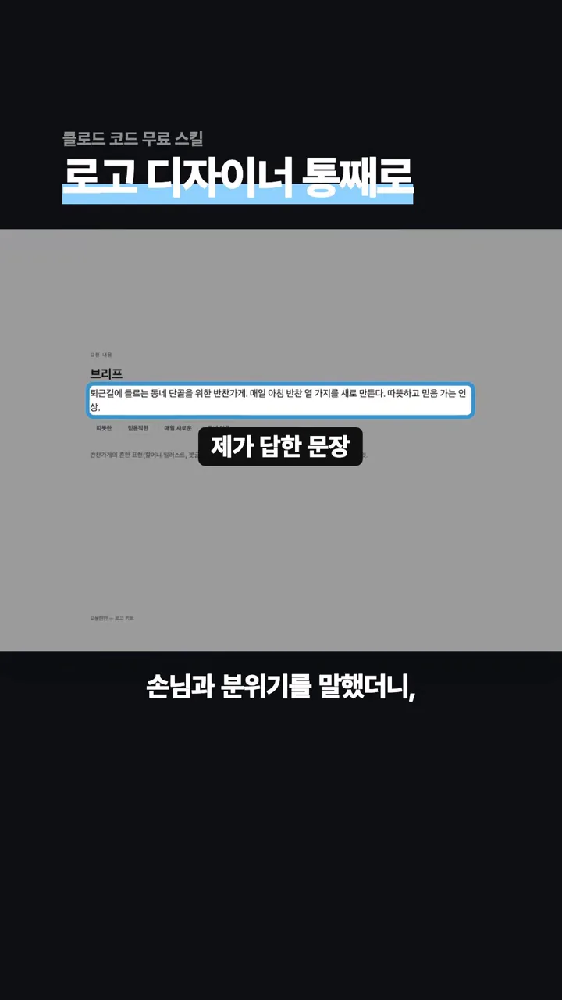
한 장에 담긴 브랜드 키트
그러자 브랜드 키트가 나왔어요. 맨 위에 로고의 뜻이 한 줄로 있고, 그 아래 버전 네 가지(가로형, 세로형, 심볼, 반전형), 색 세 가지, 여백과 최소 크기 표가 이어져요.
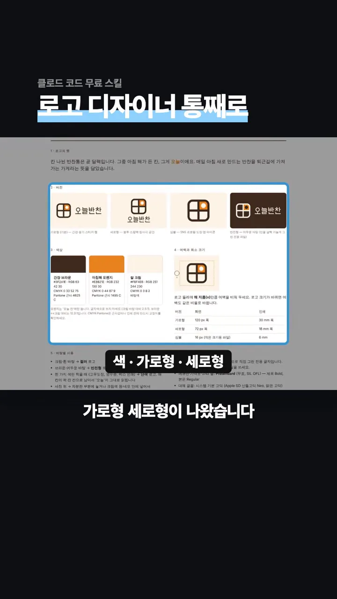
| 버전 | 화면 최소 | 인쇄 최소 |
|---|---|---|
| 가로형 | 120px 폭 | 30mm 폭 |
| 세로형 | 72px 폭 | 18mm 폭 |
| 심볼 | 16px (작은 크기용 파일) | 6mm |
파비콘과 앱 아이콘 크기의 파일도 따로 나와요. 화면은 브라우저 탭 크기의 작은 심볼이 함께 놓인 모습을 보여 줘요.
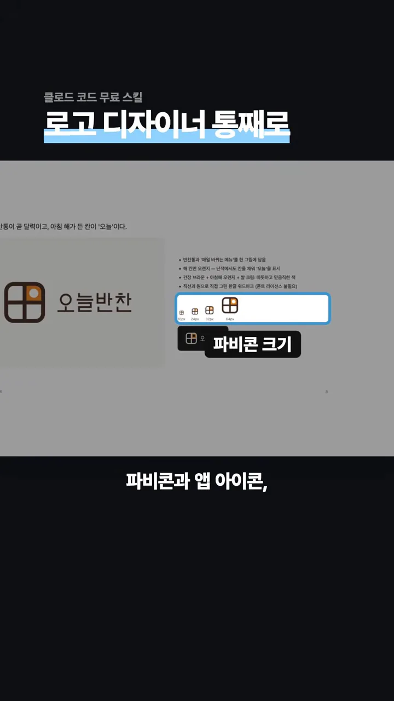
로고를 실제 물건 위에 얹은 목업도 있어요. 반찬 용기, 간판, 쇼핑백, 명함, 앱 아이콘에 올린 모습이에요.
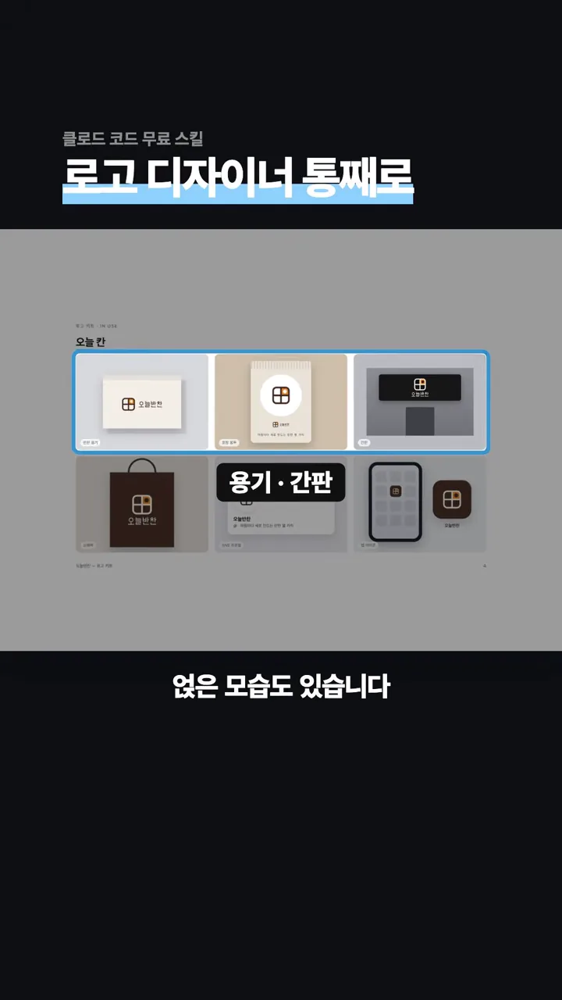
이 모든 걸 한 장에 모은 사용 가이드까지 받아요. 영상은 이제 가게 로고는 디자이너 없이 말로 부탁해서 받으면 된다고 정리해요.
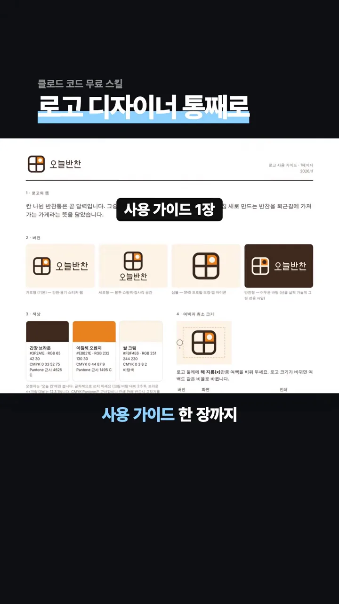
설치 명령과 요청 문장
영상 끝에는 설치 방법과 실제로 쓴 문장을 한 장에 정리해 보여 줘요. 설치는 '이 프로젝트에만' 까는 방식이에요. 저장소를 임시 폴더에 받은 뒤 스킬 폴더만 프로젝트의 .claude/skills/로 복사해요.
git clone https://github.com/kaankiziltug/logo-design-skill.git /tmp/logo-design-skill
mkdir -p .claude/skills
cp -r /tmp/logo-design-skill/skills/logo-design .claude/skills/logo-design바로 써 볼 요청 문장은 "로고 디자인 스킬로 동네 반찬가게 로고를 만들어 줘. 가게 이름은 오늘반찬이야"예요. 시안을 받은 뒤에는 앞에서 본 것처럼 손님과 원하는 인상을 한 문장으로 답하면 돼요.
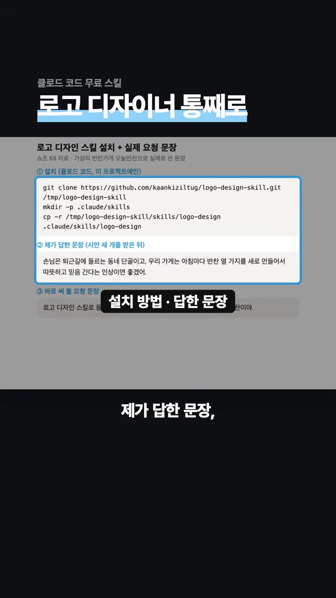